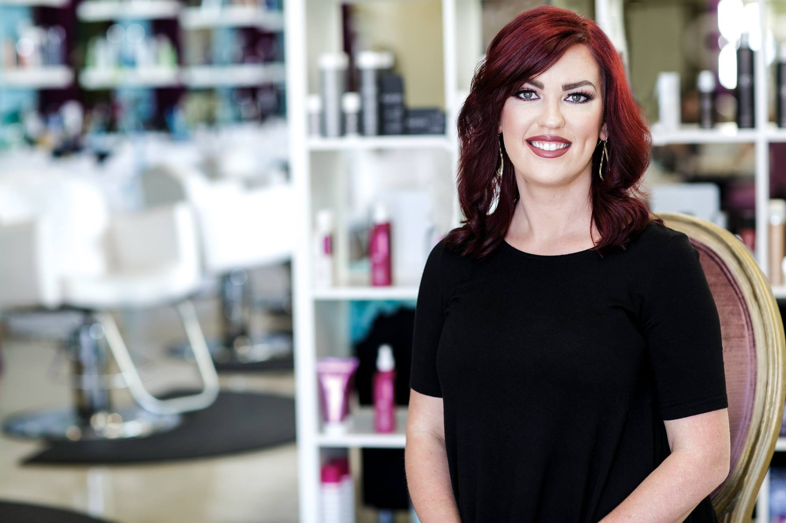

“The only way to do a great job, is to love what you do.” - Steve Jobs

I chose to become I.B.E certified because this method solves 3 major problems encountered with the different types of hand-tied extensions.
1st and foremost is the damage to the client's hair and scalp from tension, over-direction and haphazard installs.
2nd is client discomfort due to the contact of beads on the scalp and the common "clamp and crank" beading approach.
3rd is the complete lack of versatility and styling options that clients wearing beaded rows experience. Exposed beads, bonds, and braids are all a woman will see when she with her hair up.
I am the only certified I.B.E professional in the 225 area. Free Consultations!